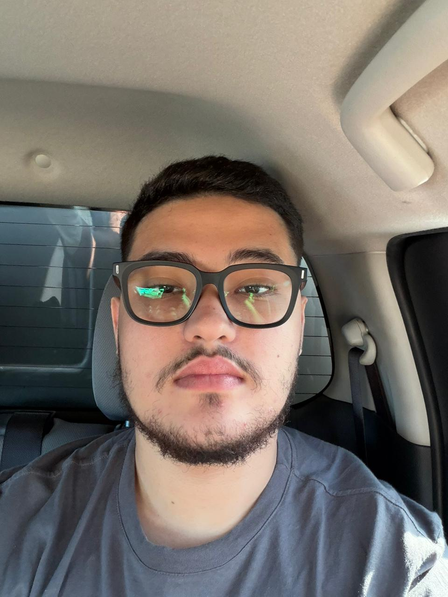
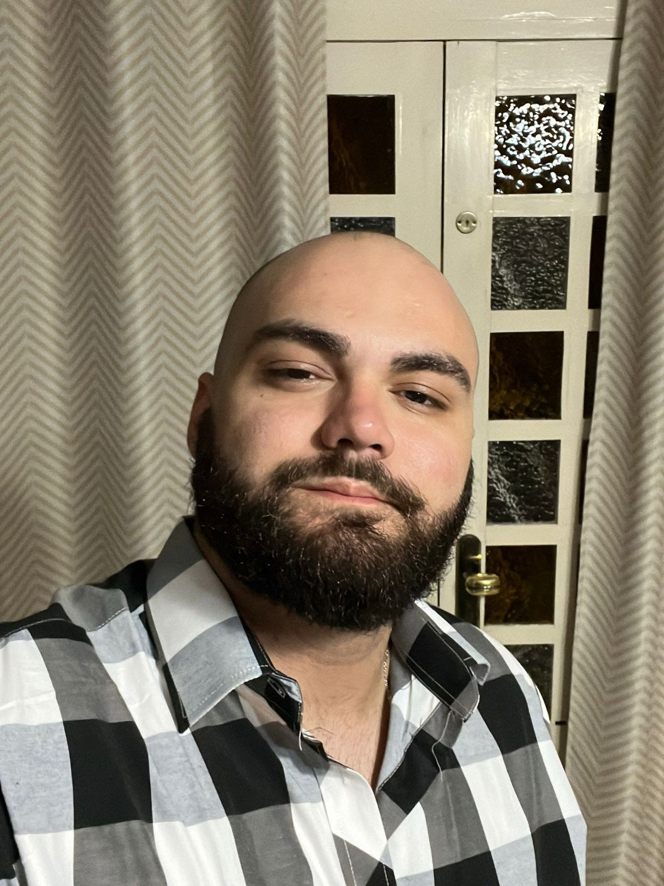

Equipe do Projeto
Gustavo Anthony
Frontend & UI

João Pedro
Tech Lead

Alunos do IFS - Campus Lagarto.
Este guia existe para Lagarto e para quem ama Lagarto — não apenas para visitantes. Reconhecemos que a Feira Livre não é atração, é vida; que a macaxeira não é curiosidade, é sustento; que a vaquejada não é espetáculo, é vocação. Essas manifestações culturais são o coração pulsante de uma comunidade.
A criação deste guia envolveu pesquisa aprofundada em múltiplas fontes confiáveis. Fontes Públicas: Portais da Prefeitura de Lagarto, publicações da Secretaria de Agricultura, legislação estadual e federal; Documentos Legislativos: Lei Federal 14.930/2024, Lei Estadual 8.954/2021, decretos municipais; Reportagens Especializadas: Publicações em mídia estadual, estadual e nacional sobre vaquejada, macaxeira e economia local; Dados Econômicos: Análises do EMDAGRO (Empresa de Desenvolvimento Agropecuário de Sergipe), EMBRAPA e estudos acadêmicos;
Todo esse material foi compilado, organizado e apresentado de forma narrativa que honra a profundidade das informações enquanto mantém acessibilidade para o leitor. O objetivo é criar um documento que funciona tanto como guia turístico quanto como referência acadêmica sobre manifestações culturais nordestinas.